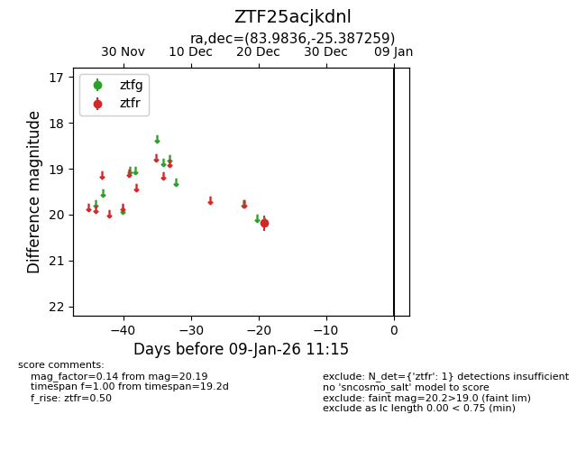
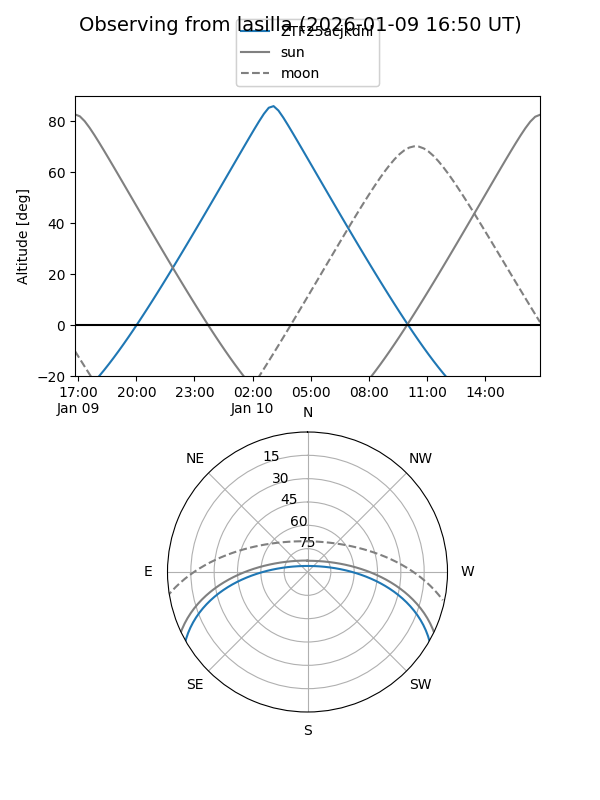
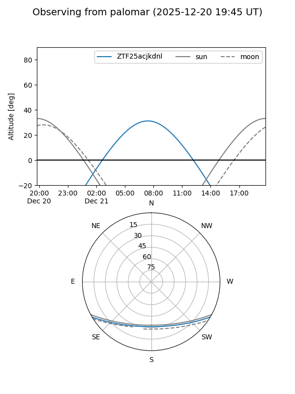

ZTF25acjkdnl
Target ZTF25acjkdnl at 2025-12-21 07:23
Aliases and brokers:
FINK: fink-portal.org/ZTF25acjkdnl
Lasair: lasair-ztf.lsst.ac.uk/objects/ZTF25acjkdnl
ALeRCE: alerce.online/object/ZTF25acjkdnl
alt names
ZTF25acjkdnl (ztf,fink_ztf)
Coordinates:
equatorial (ra, dec) = 83.9836,-25.38726
equatorial (HMS+DMS) = 05:35:56.06,-25:23:14.13
galactic (l, b) = (229.1282,-27.10478)
Flags:
Photometry:
last ztfr=20.19
1 ztfr detections
Lightcurve

Visibility


Additional plots